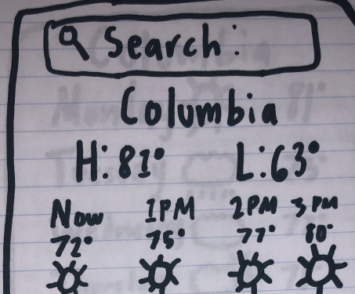
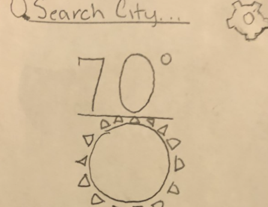

Problem Statement: Hourly Weather Update
Our users are uninformed about the change in weather throughout the day and feel frustrated due to unexpected weather conditions. Our solution should update users with an hourly forecast.
Affinity Diagram: Hourly Weather Update

After brainstorming ideas with my group, we created an affinity diagram that covers all the topics in the Hourly Weather Update.
Personas: 3 Personas for Hourly Weather Update
Personas for an average person that spends time outdoors and needs to check the weather every hour.
Storyboard: Ralph Blanco

A comic strip to illustrate the purpose of the hourly weather update app.
Sketch: Hourly Weather Update App
A sketch of possible app ideas for the hourly weather update problem.
Paper Prototype: Hourly Weather Update Prototype Video
A paper prototype explaining the hourly weather update app functions.
Usability Test: Hourly Weather Update Usability Testing Script

A scenario and a set of tasks to test the functionalities of the Hourly Weather Update App.